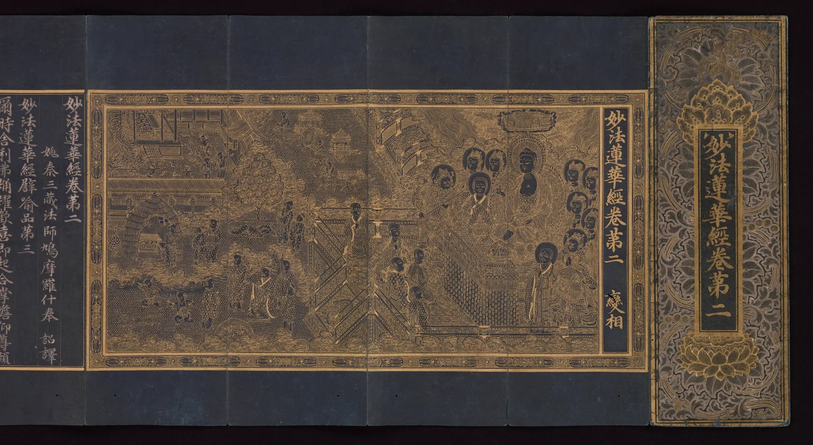

타이포그래피의 지도
가게 문에 붙은 쪽지 한 장을 떠올려 본다. "오늘은 일찍 문을 닫습니다." 볼펜으로 휘갈긴 글씨라면 주인의 급한 사정이 느껴지고, 반듯한 명조로 인쇄되어 있다면 공지처럼 읽히고, 굵은 제목용 글꼴로 크게 찍혀 있다면 경고처럼 보인다. 글자는 같은 말을 하는데 목소리가 다르다. 이 장은 그 목소리가 어디서 오는지를 네 갈래로 나누어 둘러보고, 앞으로 열두 장에서 하나씩 풀어 갈 질문을 한 장의 지도 위에 펼친다.
- 타이포그래피가 글자를 고르고, 간격을 정하고, 지면에 놓는 일이라는 것을 설명한다.
- 라틴 글자와 한글이 글자 상자를 쓰는 방식이 어떻게 다른지 본다.
- 글줄의 길이와 행간이 "읽고 싶은" 글을 만든다는 것을 직접 조작해 본다.
- 흐리게 보기로 지면의 위계를 점검하고, 화면의 픽셀이 작은 글자를 어떻게 바꾸는지 본다.
- 타이포그래피의 통설 가운데 근거가 엇갈리는 것을 가려내고, 이 책 전체의 지도를 그린다.
같은 문장, 다른 목소리
글자에는 두 겹의 뜻이 있다. 하나는 낱말과 문장이 전하는 내용이고, 다른 하나는 그 글자의 모양이 전하는 인상이다. 같은 "닫습니다"라도 붓으로 쓴 듯한 명조는 차분하고, 획 굵기가 고른 고딕은 사무적이고, 손글씨는 사적이며, 획이 아주 굵은 제목용 글꼴은 소리치는 것 같다. 내용은 그대로인데 듣는 사람이 받는 말투가 달라진다.
아래 시뮬레이터에서 문장 하나를 네 가지 글꼴로 바꿔 본다. 위 칸은 고른 글꼴을 크게, 아래 네 줄은 같은 문장을 네 글꼴로 나란히 보여 준다. 슬라이더로 크기를 바꾸면서 문장 폭이 어떻게 달라지는지도 본다.
같은 문장, 네 가지 목소리
무엇을 봤는지 정리하면, 글꼴은 장식이 아니라 말투다. 그리고 말투는 내용과 맞을 때 보이지 않는다. 타이포그래퍼 비어트리스 워드(Beatrice Warde, 1900–1969)는 1930년대의 강연을 바탕으로 한 글 「크리스털 잔」(The Crystal Goblet)에서, 좋은 인쇄는 포도주를 담은 투명한 유리잔처럼 내용을 가리지 않고 보여 주어야 한다고 주장했다. 이 책 첫 화면의 문장 "좋은 글자는 읽는 동안 보이지 않는다"가 그 생각을 줄인 것이다. 다만 이것은 오래 읽는 글, 곧 본문(Body text)에 대한 이야기다. 간판이나 포스터 제목처럼 한눈에 붙잡아야 하는 글자는 일부러 보이도록 짠다. 이 차이는 12장에서 다시 만난다.
타이포그래피는 무엇을 하는가
타이포그래피(Typography)는 글을 읽히게 하려고 글자를 고르고, 크기와 간격을 정하고, 지면이나 화면 위에 배치하는 일이다. 말의 뿌리는 활자(type)로 찍는 일이지만, 지금은 화면 위의 글자, 간판의 글자까지 모두 이 말에 들어간다. 비슷한 이웃 말과 구별해 두면 앞으로 편하다.
- 글꼴 디자인은 글자 한 벌(수천 자의 한글, 수백 자의 라틴 문자와 숫자·기호)을 그려 만드는 일이다. 타이포그래피는 대개 이미 만들어진 글꼴을 쓴다.
- 레터링(Lettering)은 특정한 낱말 하나를 위해 글자를 직접 그리는 일이다. 간판의 가게 이름, 책 표지의 제목이 그렇다. 같은 글자가 다시 쓰일 것을 전제하지 않는다(12장).
- 서예와 캘리그래피는 붓이나 펜으로 한 번에 써 내려가는 글씨의 예술이다. 획의 굵기 변화와 기울기 같은 글자의 뼈대 상당 부분이 여기서 왔다(2장).
타이포그래피가 하는 일은 크게 네 겹으로 나눌 수 있다. 글자 한 자의 모양을 알고 고르는 일(글자), 글자가 모여 줄이 될 때 사이를 조절하는 일(글줄), 줄이 모여 지면이 될 때 질서를 주는 일(지면), 그리고 그 결과가 놓이는 매체에 맞추는 일(쓰임)이다. 이 책의 네 부가 이 네 겹이다.
한국은 이 일의 오래된 현장이다. 고려의 『백운화상초록불조직지심체요절』(1377)은 현재 남아 있는 금속 활자 인쇄본 가운데 가장 오래된 것으로 알려져 있고, 유럽에서 요하네스 구텐베르크(Johannes Gutenberg)가 금속 활자로 성서를 찍은 것은 1450년대다. 세종이 1443년에 만들고 1446년에 반포한 훈민정음은 처음부터 소리를 모아 네모 안에 한 자를 짓는 구조를 가졌고, 그 구조는 지금 우리가 쓰는 한글 글꼴에도 그대로 이어진다(3장). 이 책은 라틴 글자와 한글을 같은 무게로 다룬다.
글자: 한 자의 뼈대
라틴 글자와 한글은 출발부터 다르다. 라틴 글자는 보이지 않는 가로줄 몇 개 위에 선다. 모든 글자가 하나의 기준선(Baseline)에 발을 딛고, 소문자의 몸통 높이와 대문자의 높이가 정해져 있으며, 글자마다 폭이 다르다. "i"는 좁고 "m"은 넓다. 한글은 초성·중성·종성이 모여 한 자를 이루고, 대부분의 글꼴은 그 한 자를 같은 크기의 네모 칸에 넣는다. 그래서 글자마다 폭이 거의 같다.
글자는 화면에서 보이는 모양 말고도, 옆 글자와의 거리를 정하는 보이지 않는 상자를 하나씩 가지고 있다. 이 상자의 폭을 글자 폭(Advance width)이라 하고, 글자를 늘어놓을 때 다음 글자는 이 폭만큼 옆에서 시작한다. 아래 시뮬레이터는 그 상자를 보이게 그린다.
보이지 않는 글자 상자
상자를 보면 두 문자 체계의 성격이 드러난다. 라틴 글자는 폭이 제각각이라 글자 사이의 빈 공간을 고르게 보이게 하는 일(5장)이 처음부터 중요했다. 한글은 칸이 같아서 줄이 반듯하게 맞는 대신, 받침이 없는 "가"와 받침이 있는 "방"이 같은 칸 안에서 차지하는 넓이가 달라 글자마다 무게와 높이가 들쭉날쭉해 보이는 문제가 생긴다(3장). 섞어 쓰기에서 본 것처럼, 한글과 라틴 글자를 한 줄에 함께 쓰면 두 체계의 기준이 부딪힌다. 이 부딪힘은 한국어 타이포그래피에서 거의 매일 만나는 문제다.
라틴 글자의 보이지 않는 줄들, 곧 기준선과 소문자 몸통 높이(x높이(x-height)), 대문자 높이, 위아래로 뻗는 획은 2장의 주제다. 명조와 고딕, 세리프와 산세리프처럼 글꼴을 갈래로 나누는 법과 그 한계는 4장에서 다룬다.
글줄: 사이를 보는 일
글자를 고른 다음에는 사이를 정한다. 글자와 글자 사이(자간(Letter spacing)), 줄과 줄 사이(행간(Leading, line spacing)), 그리고 한 줄의 길이(글줄 길이(Line length, measure))다. 이 셋은 따로 움직이지 않는다. 줄이 길어지면 다음 줄의 시작을 찾기 어려워지므로 행간이 더 필요하고, 글자가 커지면 같은 폭에 들어가는 글자 수가 줄어든다.
아래는 어떤 동네 서점의 소식 글이다. 처음 모습은 이 장 끝 케이스의 서윤이 처음 올린 글처럼, 줄이 화면 끝까지 이어지고 행간이 빽빽하다. 오른쪽 끝의 손잡이를 끌어 글줄 길이를 바꾸고, 슬라이더로 글자 크기와 행간을 바꿔 본다. 줄 끝에서 다음 줄 처음으로 돌아가는 눈의 길은 점선 화살표로 그렸다.
읽을 수는 있지만 읽고 싶지 않은 글
같은 글이 줄 길이와 행간만으로 "읽고 싶은" 글이 되기도, 피하고 싶은 글이 되기도 한다. 이유의 일부는 눈이 글을 읽는 방식에 있다. 우리는 글줄을 매끄럽게 훑는 것 같지만 실제로 눈은 몇 글자씩 건너뛰며 멈췄다 움직이기를 되풀이하고, 줄 끝에서는 크게 한 번 되돌아가 다음 줄 처음을 찾는다. 줄이 길수록 이 되돌아가기가 멀어지고, 행간이 좁을수록 도착할 줄이 이웃 줄과 헷갈린다.
지면: 순서와 질서를 주는 일
줄이 모이면 지면이 된다. 지면에서 타이포그래피는 순서를 정한다. 무엇을 먼저 읽고 무엇을 나중에 읽을지, 무엇이 제목이고 무엇이 덧붙인 말인지를 크기, 굵기, 색, 간격, 위치로 보여 준다. 이 순서를 위계(Hierarchy)라고 한다. 그리고 여러 요소가 같은 선과 같은 간격을 공유하게 만드는 보이지 않는 틀이 그리드(Grid)다.
위계를 점검하는 가장 간단한 방법은 눈을 가늘게 뜨고 보는 것이다. 글자가 읽히지 않을 만큼 흐려지면 남는 것은 덩어리뿐이고, 덩어리의 크기와 진하기가 곧 위계다. 아래의 두 안내문은 같은 내용이다. 왼쪽은 모든 줄을 같은 크기와 굵기로, 오른쪽은 크기와 굵기, 간격으로 세 단계를 주었다. 경계선을 끌어 비교하고, 흐림 슬라이더를 올린다.
흐리게 보기: 위계가 남는가
오른쪽 안내문이 크기를 키운 것은 제목 하나뿐이고, 나머지 차이는 굵기와 간격이다. 위계는 크기를 크게 벌릴수록 강해지지만, 단계가 너무 많으면 오히려 순서가 흐려진다. 몇 단계가 적당한지, 크기는 어떤 비율로 정하는지는 8장, 그리드는 9장, 정렬과 단락은 10장에서 다룬다.

쓰임: 매체가 바꾸는 것
같은 글자도 어디에 놓이느냐에 따라 다르게 짜야 한다. 종이 위의 글자는 잉크가 번지고, 간판의 글자는 멀리서 비스듬히 보이고, 화면의 글자는 네모난 픽셀(Pixel)의 격자 위에 그려진다. 특히 작은 글자일수록 픽셀 몇 개로 획을 표현해야 해서 글꼴 디자이너가 그린 모양이 그대로 나오지 않는다.
아래 시뮬레이터는 글자를 정해진 픽셀 크기로 그린 다음, 그 픽셀 하나하나를 크게 확대해 보여 준다. 슬라이더로 글자 크기를 바꾼다. "흑백 픽셀만"을 켜면 픽셀을 켜거나 끄기만 하는 옛 화면처럼, 회색 중간 단계 없이 그린다.
픽셀 위의 글자
작은 화면 글자에서 한글이 불리한 이유는 픽셀만이 아니다. 현대 한글은 초성 19개, 중성 21개, 종성 27개(받침 없음까지 28가지)를 조합해 이론상 11,172자를 만들 수 있다. 글꼴은 그중 많이 쓰는 2,350자(KS X 1001 완성형)나 11,172자 전부를 한 자씩 그려 넣어야 하므로, 라틴 글꼴보다 파일이 수십 배 무겁기도 하다. 웹사이트에 한글 글꼴을 내려받게 하면 첫 화면이 늦게 뜨는 이유다. 이 문제와 대안은 11장에서, 간판처럼 멀리서 읽는 큰 글자는 12장에서 다룬다.
규칙과 근거
타이포그래피에는 규칙처럼 전해지는 말이 많다. "본문은 세리프가 잘 읽힌다", "한 줄은 몇 자가 정답이다", "난독증에는 전용 글꼴이 좋다". 이 가운데 일부는 오래된 인쇄 관행에서 왔고, 일부는 특정한 조건에서 한 실험의 결과가 조건을 잃고 퍼진 것이다. 이 책은 규칙을 버리지 않지만 정답으로 다루지도 않는다. 규칙은 출발점이고, 무엇을 전하려는가에 맞는지로 판단한다.
| 흔히 듣는 말 | 근거의 수준(이 책의 판단) | 다루는 장 |
|---|---|---|
| 본문은 세리프 글꼴이 더 잘 읽힌다 | 연구 결과가 엇갈린다. 매체, 글자 크기, 독자에 따라 다르고 뚜렷한 차이를 찾지 못한 연구도 많다. 통설로 다룬다. | 7장 |
| 한 줄에는 정해진 글자 수가 있다 | 권장 범위는 오랜 조판 관행과 일부 실험에서 나왔다. 화면 실험에서는 읽는 속도와 편하다는 느낌이 서로 다른 답을 내기도 했다. 범위로 다룬다. | 6장 |
| 난독증에는 전용 글꼴이 도움이 된다 | 전용 글꼴의 효과를 확인하지 못했다는 연구가 여럿 있다. 글자 크기와 간격이 더 중요하다는 주장도 있다. 근거가 약하다. | 7장 |
| 글자는 클수록 잘 읽힌다 | 작은 글자가 읽기를 느리게 한다는 것은 분명하지만, 어느 크기를 넘으면 더 커져도 빨라지지 않는다는 읽기 실험 결과가 있다. | 7장 |
| 글자와 바탕의 대비는 4.5:1 이상 | 웹 접근성 표준(W3C WCAG 2)의 본문 글자 기준이다. 표준이므로 출처와 함께 수치로 쓴다. | 7장, ColorBook 13장 |
규칙을 일부러 깨는 타이포그래피도 있다. 20세기 초 유럽의 미래파와 다다 시인들은 글자 크기와 방향을 마구 바꿔 소리와 소음을 지면에 옮기려 했고, 시인 이상(1910–1937)은 「오감도」(1934) 연작에서 숫자와 점으로 이루어진 판을 시 속에 넣어 읽는 사람을 멈춰 세웠다. 이런 작업은 "읽기 편한가"로 재면 실패지만, 읽는 사람을 멈추게 하는 것이 목적이라면 성공이다. 이 책의 판단 기준이 "좋은 글자"가 아니라 "무엇을 전하려는가에 맞는가"인 이유다.
이 책의 지도
지금까지 만난 질문들이 각각 한 장씩의 주제가 된다. 책은 네 부로 나뉜다. 글자는 한 자의 뼈대와 갈래(라틴 글자의 해부, 한글의 구조, 글꼴의 갈래), 글줄은 글자가 모여 줄이 될 때 생기는 간격의 문제(자간과 커닝, 행간과 글줄 길이, 읽히는 글자), 지면은 줄이 모여 지면이 될 때의 질서(위계, 그리드, 정렬과 단락), 쓰임은 매체가 바꾸는 것(화면의 글자, 제목과 레터링)이다. 13장 조판 실험실에서는 글 한 편으로 모든 손잡이를 한꺼번에 조정한다.
마지막 시뮬레이터는 이 지도를 손에 쥐어 본다. 서점 소식 글 한 단락을 놓고 네 갈래의 손잡이를 한꺼번에 움직인다. 글꼴(글자), 자간·행간·글줄 길이(글줄), 정렬(지면)을 바꾸고, 아래 띠에서 그 단락을 흐리게 본 회색 덩어리를 함께 본다. 오른쪽 끝의 손잡이를 끌어 글줄 길이를 정한다.
네 손잡이로 짜는 한 단락
네 갈래의 손잡이는 서로 맞물려 있다. 자간을 넓히면 줄이 길어지고, 줄이 길어지면 행간이 더 필요하며, 양끝 맞추기를 고르면 짧은 줄에서 어절 사이가 벌어진다. 그래서 타이포그래피에는 하나만 고쳐서 끝나는 일이 드물다. 이 책은 손잡이를 하나씩 따로 익힌 다음, 마지막 실험실에서 다시 한꺼번에 맞춘다. 그리고 어느 조합이 정답이라고 말하지 않는다. 같은 글도 휴대폰에서 소식을 읽는 손님과, 벽에 붙은 안내문을 지나가며 보는 손님에게는 다른 조판이 필요하다.
서윤의 여름 조판 노트
읽을 수는 있지만 읽고 싶지 않은 글
가을에 책방 E의 색을 정하고(ColorBook), 겨울에 쇼윈도와 포스터를 짜고(CompositionBook), 봄에 안내 책자의 드로잉 열두 점을 그린(DrawingBook) 윤서윤에게 주인이 여름 일을 맡겼다. 이번에는 글자다. 네 가지 과제가 한꺼번에 왔다. 가로 1.8 m 간판에 들어갈 로고타입 "책방 E", 서점 웹사이트의 소식 글 본문, 여름 낭독 모임 안내문(A4 한 장, 인쇄와 PDF), 그리고 봄에 그린 드로잉이 들어갈 「골목 산책」(A5, 16쪽)의 본문 조판이다.
서윤은 우선 웹사이트에 첫 소식 글을 올렸다. 글쓰기 도구의 기본 글꼴, 기본 크기 16픽셀, 따로 폭을 정하지 않은 본문 칸 그대로였다. 회사의 넓은 모니터에서 열어 보니 본문 칸이 1,200픽셀 가까이 벌어졌다. 16픽셀 한글 한 자의 폭은 이 장에서 쓴 고딕 기준으로 약 14.7픽셀(글자 크기의 0.92배)이고 어절 사이 공백은 그 4분의 1쯤이니, 한 줄에 공백을 포함해 100자 안팎이 이어진 셈이다. 행간도 기본값 그대로라 줄이 빽빽했다. 주인은 휴대폰으로 읽고는 "읽을 수는 있는데, 끝까지 읽고 싶지는 않네요"라고 했다. 그리고 덧붙였다. "할머니 손님도 휴대폰으로 소식을 읽으세요."
멘토인 화가 한도경은 출력한 글을 책상에 펴 놓고 한참 보더니 연필로 줄 끝마다 작은 표시를 했다. "글자도 그림처럼 사이를 본다. 글자가 아니라 글자 사이, 줄 사이, 단락 사이의 하얀 데부터 봐." 활판 인쇄소 시절에는 줄 사이에 띠를 끼우는 일이 하루의 절반이었다고 했다. 도경은 웹사이트를 고치는 법은 모른다며 서윤에게 휴대폰 글자 크기 설정을 바꾸는 법을 물었고, 서윤은 그 대신 도경이 인쇄소에서 받아 둔 오래된 활자 견본첩을 빌렸다.
서윤의 선택은 네 과제의 순서를 정하는 것이었다. 기준은 "누가 얼마나 자주 읽는가"와 "되돌리기 어려운가"였다. 웹 본문은 매주 새 글이 올라가고 가장 많은 손님이 읽는다. 안내문은 모임 날짜에 맞춰 먼저 나가야 한다. 책자는 인쇄하면 고칠 수 없지만 본문 원고가 아직 다 모이지 않았다. 간판은 가장 오래 걸리지만 한번 걸면 가장 오래 남으니, 서두르지 않고 여름 내내 다듬기로 했다. 그리고 네 과제 모두에서 같은 문장으로 글꼴과 간격을 시험하기로 했다.
핵심 정리
- 타이포그래피는 글을 읽히게 하려고 글자를 고르고, 크기와 간격을 정하고, 지면에 배치하는 일이다. 글꼴은 장식이 아니라 말투이고, 본문의 글자는 내용과 맞을 때 보이지 않는다.
- 라틴 글자는 기준선 위에 서고 글자마다 폭이 다르다(비례폭). 한글은 자모를 모아 네모 칸에 짓고 대부분의 글꼴에서 글자 폭이 같다. 두 체계를 한 줄에 쓰면 기준이 부딪힌다.
- 자간, 행간, 글줄 길이는 함께 움직인다. 줄이 길수록 다음 줄 처음을 찾기 어려워 행간이 더 필요하다.
- 흐리게 보면 위계가 보인다. 남는 덩어리의 크기와 진하기가 읽는 순서다. 위계는 크기만이 아니라 굵기, 간격, 자리로도 만든다.
- 매체가 글자를 바꾼다. 작은 화면 글자는 픽셀 격자에 맞춰 그려지고, 획이 많은 한글은 작은 크기에서 먼저 무너진다. 한글 글꼴은 글자 수가 많아 파일이 무겁다.
- 타이포그래피의 통설 가운데 상당수는 근거가 엇갈린다. 규칙은 출발점으로 쓰고, 판단은 "무엇을 전하려는가에 맞는가"로 한다.
확인 퀴즈
1. 서점 소식 글이 "읽을 수는 있지만 끝까지 읽고 싶지 않다"는 말을 들었다. 넓은 모니터에서 기본 설정 그대로 올린 글이다. 가장 먼저 의심할 것은?
2. 웹사이트에 한글 웹 글꼴을 쓰면 라틴 글꼴만 쓸 때보다 첫 화면이 늦게 뜨는 일이 많다. 가장 알맞은 설명은?
3. 안내문 시안을 눈을 가늘게 뜨고 보는 "흐리게 보기"로 확인하는 것은 무엇인가?
4. "본문에는 세리프 글꼴이 산세리프보다 더 잘 읽힌다"는 말에 대해 이 책이 취하는 태도는?
출처와 글꼴
- Keith Rayner, "Eye movements in reading and information processing: 20 years of research", Psychological Bulletin 124(3), 1998. — 고정과 도약의 평균값은 이 리뷰의 요약을 옮겼다.
- Beatrice Warde, "The Crystal Goblet, or Printing Should Be Invisible" (1930년대 강연, 1955년 같은 제목의 책에 수록). — 내용을 요약했다.
- W3C, Web Content Accessibility Guidelines (WCAG) 2.2, 1.4.3 대비(최소). 본문 글자 4.5:1.
- KS X 1001(정보 교환용 부호계): 완성형 한글 2,350자. 현대 한글 조합 수 11,172 = 19 × 21 × 28.
- 글꼴(모두 SIL Open Font License 1.1, Google Fonts로 불러옴): Noto Serif KR, Noto Sans KR(Google·Adobe의 Noto CJK / 본명조·본고딕 계열), Nanum Pen Script(나눔손글씨 펜, NAVER·Sandoll), Black Han Sans(검은고딕, Zess Type). 본문과 화면 글자는 이 서가의 기본 글꼴 Pretendard(OFL)다.
- 작품 이미지: 메트로폴리탄 미술관 Open Access(CC0). 자세한 내용은 크레딧 페이지.